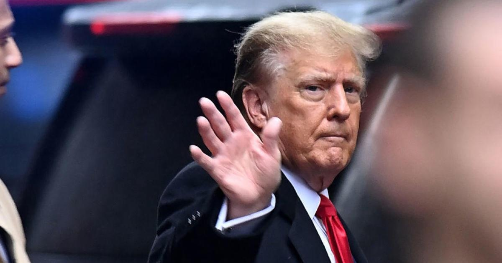

Trump walks out of courtroom as closing arguments begin in E. Jean Carroll trialFormer President Donald Trump must pay $83.3 million in damages for defamatory statements he made denying he sexually assaulted the writer , a federal jury ruled Friday, handing down a stunning verdict after less than three hours of deliberation. The jury awarded Carroll $18.3 million in compensatory damages, and $65 million in punitive damages. The compensatory amount included $11 million for repairing her reputation, and $7.3 million for emotional harm. Carroll's attorneys asked the jury to award $24 million in compensatory damages. The punitive amount, lawyer Roberta Kaplan said, should be enough to "make him stop" defaming her client. After the verdict was read aloud in federal court in lower Manhattan, Carroll emerged from the courthouse smiling and flanked by her legal team. She declined to speak to a crush of cameras and reporters assembled outside, but issued a statement later, saying, "This is a great victory for every woman who stands up when she's been knocked down, and a huge defeat for every bully who has tried to keep a woman down." In a social media post after the verdict, Trump called the judicial system "Broken and Unfair!" Trump's defamatory statements A longtime advice columnist, Carroll accusing Trump of sexually assaulting her in a department store dressing room in the mid-1990s. Trump, who was president at the time, immediately denied the allegations, calling Carroll a "whack job" and claiming he had never met her. He would go on to repeat similar denials in public appearances, social media posts and even in court, a pattern cited by Carroll's attorneys during the trial. Carroll filed two defamation lawsuits over comments Trump made in 2019 and 2022, arguing his disparagements ruined her reputation and subjected her to endless streams of threats. In the trial to resolve Carroll's first suit in May 2023, a jury found Trump liable for defamation and sexual abuse, and . Before the second trial got underway, the judge ruled that Carroll was telling the truth about the assault, and that Trump's statements denying her claims were defamatory. The jury was tasked only with deciding what damages Carroll was entitled to receive. The jurors' $83 million decision came just days after Trump , solidifying his status as the front-runner to become the Republican presidential nominee. Minutes after the verdict was handed down, the former president, who had already left the courthouse, issued a statement on his social media platform, Truth Social. "Absolutely ridiculous!" Trump wrote. "I fully disagree with both verdicts, and will be appealing this whole Biden Directed Witch Hunt focused on me and the Republican Party. Our Legal System is out of control, and being used as a Political Weapon. They have taken away all First Amendment Rights. THIS IS NOT AMERICA!" While it remains to be seen whether the verdict will "make him stop," as Carroll's attorneys intended, Trump's statement did not include any of the language he has typically used when referring to the case: denying ever having met her, portraying her as a "liar" or calling the case a "hoax." Carroll's closing argument Both sides presented their closing arguments on Friday before the jury got the case. Kaplan was about 10 minutes into her remarks when Trump, who was seated at the defense table, got up and exited the room. Before he left, Kaplan repeatedly told the jury that he sexually assaulted Carroll, prompting the former president to shake his head. She then moved on to Trump's repeated defamatory statements, and said that "typically when people are held liable for false and defamatory lies, they stop." "He continued to defame Ms. Carroll even as this trial was ongoing," Kaplan said. Kaplan — who is not related to Lewis Kaplan, the judge overseeing the case — then asked the jury to award Carroll at least $24 million in compensatory damages. She walked the jury through the first statements Trump made in 2019, and the many times he has repeated his claims — that he's never met Carroll, that she isn't his "type," that he didn't assault her and that the case is a "hoax" — since then, including some just days earlier. "Those false denials and attacks continued while you were in this courtroom … while you were sitting in those seats," Kaplan said, before showing a clip of a press conference Trump held last week, when he again lashed out at Carroll. Then she showed a recent Truth Social post in which Trump vowed to deny the allegations "a thousand times." "A thousand times, are you kidding me?" Kaplan said. "He's prepared to do it 1,000 times unless you make him stop." Kaplan finished by pointing out that Trump didn't attend the first trial, when the question of whether he sexually abused Carrol was put before the jury, but did appear for these proceedings, when damages were at stake. "The one thing that Donald Trump does care about is money," she said. Trump's closing argument Alina Habba, Trump's attorney, presented the closing argument for the defense, with Trump back in the courtroom. She focused on what she called a "five-hour gap" in 2019 between when Carroll's allegations first surfaced and Trump's first defamatory statement. Habba said Carroll hadn't proved "causation" between Trump's comment and the ensuing harassment Carroll received. Habba focused on a portion of Carroll's testimony when she described the first night she began receiving threats. She testified that she hung a pair of pants to cover a hotel window out of fear. "She didn't call the police, but she hung up pants," Habba said. "She didn't tell anyone, but she hung up pants." Habba continued: "There are two versions of E. Jean Carroll: The truth, which her friend knew and testified about, and the one who comes to court to get my client's money." She once again cited statements and text messages in which Carroll said she was feeling "fabulous" and "buoyant" after her allegations were made public. Given the chance to offer a rebuttal, Carroll's attorney Shawn Crowley repeatedly pointed directly at Trump, while saying he sexually assaulted Carroll and lied about it. At one point, Trump turned to watch Crowley, glaring, with his arms folded. As she continued speaking, often pointing at him, he grew more animated, shaking his head and grimacing. "They want you to decide that it's Ms. Carroll's fault, that somehow Donald Trump is a victim," Crowley said, as Trump seemed to nod his head. "The man who did these things to her, the man who sexually assaulted her, he gets to do whatever he wants," Crowley said. "The rules don't apply to him," she added, before encouraging the jury, once again, to reach a verdict that will "make him stop." for more features. |
 |